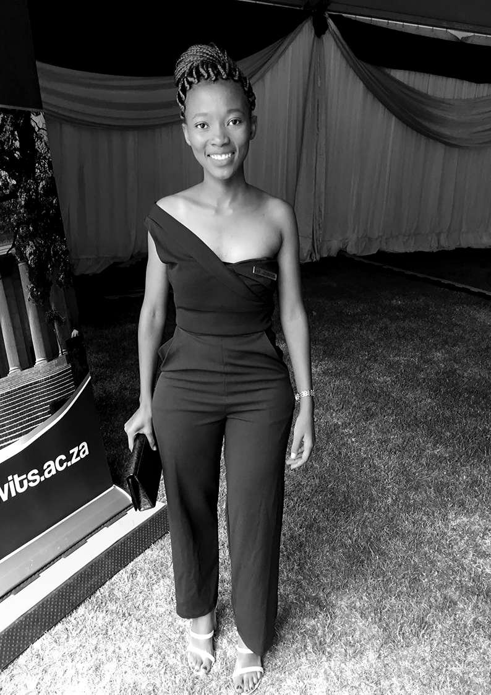

I am an enthusiastic individual who enjoys being part of a productive team and I can work well on my own too.
I am able to develop creative solutions to problems and demonstrate motivation required to solve problems.
Currently, I am completing my NCIT certificate with Umuzi Academy.
With Umuzi I am hoping to hone my skills as an aspiring Data Scientist.
I acquired an Economic Science Bachelor's degree with Wits University from the year 2015-2018.
During that time,I got involved with the University activities which helped a lot with my soft skills.
In 2018, I served as an Academic and Student Development Officer for Jubilee Hall of Residence.
It was a fulfilling role for me as I could use my experince to help others and learn a lot outside my course syllabus.
From the year 2016-2018, I was a mentor to first year students.
In the year 2017 I was a tutor for Calculas,Algebra and Economics.
I have vast interest in Data Science. How you can tell a story using a set of data is interesting to me.
I am looking foward to play a role that helps industries on decision making with my yet to be acquired analysis skills.
You can contact me to hear more about my interests.